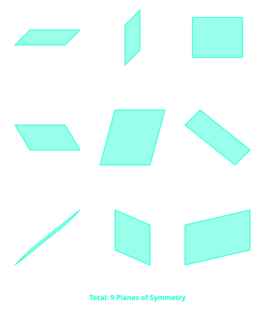
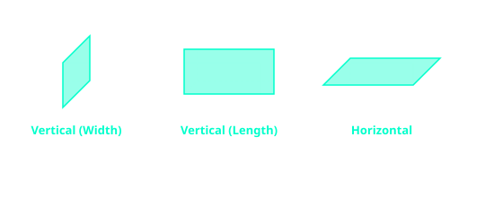
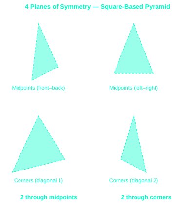

Symmetry
Symmetry describes when a shape or object can be divided into two or more identical parts. In mathematics, we study two main types of symmetry: line symmetry (reflection) and rotational symmetry (turning). For 3D shapes, we also study planes of symmetry.
Line(s) Of Symmetry
When a shape can be folded so that one half fits exactly over the other half, the shape is symmetrical and the fold line is called a line of symmetry.

NB: The center of a regular polygon is the exact point where all its lines of symmetry intersect. By drawing just two lines of symmetry, you can accurately locate the center of the shape.
Order Of Rotational Symmetry
A shape has rotational symmetry if it can be rotated about its centre and still look exactly the same in more than one position. The order of rotational symmetry is the number of times the shape fits onto itself during a full 360° rotation.
Equilateral Triangle (Order 3)
An equilateral triangle fits onto itself 3 times during a full 360° turn. Each rotation occurs at increments of 120° (360° ÷ 3). Because all three sides and all three angles are equal, the shape looks identical at each of these three stages.

Square (Order 4)
A square has a rotational symmetry of order 4. It maps onto itself every 90° (90°, 180°, 270°, and 360°). The center of rotation is the exact point where the two diagonals of the square intersect.

Rectangle (Order 2)
A rectangle has a rotational symmetry of order 2. This means it looks the same twice during a full 360° rotation (at 180° and 360°). Note that a 90° turn does not work for a rectangle because the length and width would swap positions.

Regular Pentagon (Order 5)
A regular pentagon has order 5 rotational symmetry. Since 360° ÷ 5 = 72°, the shape fits onto itself every 72°. As the shape rotates, each vertex (A through E) moves to the next position while the overall outline remains unchanged.

Regular Hexagon (Order 6)
A regular hexagon has rotational symmetry of order 6. It looks the same every 60°. By labeling all vertices A-F, you can see how each point cycles through all positions during a full rotation, while the hexagon appears unchanged.

The Mathematical Relationship
There is a direct correlation between the Order of Symmetry and the Angle of Rotation. You can calculate one if you know the other using the total 360° of a full circle:
Angle of Rotation = 360° ÷ Order
Order of Symmetry = 360° ÷ Angle
Examples:
A Square (Order 4) matches every: 360° ÷ 4 = 90°
A Hexagon (Order 6) matches every: 360° ÷ 6 = 60°
If a shape matches every 72°, its order is: 360° ÷ 72 = 5 (Pentagon)
NB: Regular polygons (where all sides and angles are equal) always have an order of rotational symmetry equal to their number of sides.
Plane(s) Of Symmetry
A plane of symmetry is an imaginary flat surface that divides a 3D shape into two halves that are mirror images of each other. Some solids have multiple planes of symmetry.
The Cube (9 Planes)
A cube is highly symmetrical. Its 9 planes are divided into two types: 3 planes parallel to the faces (middle slices) and 6 planes that cut diagonally through opposite edges.

The Cuboid (3 Planes)
Unlike a cube, a standard cuboid only has 3 planes of symmetry. Because the sides are different lengths, diagonal planes do not result in perfect mirror images.

Square-Based Pyramid (4 Planes)
A square-based pyramid has 4 planes of symmetry that all pass through the apex (top point).

Infinite Symmetry Solids
Shapes with circular cross-sections often have infinite vertical planes of symmetry passing through their central axis.

Note: A sphere is the most symmetrical 3D object possible; any plane passing through its exact center point is a plane of symmetry.
This topic is closely related to solids. It is reccommeded that learners also read this section after reading about symmetry, particularly so that they understand other proterties of polygons and solids.